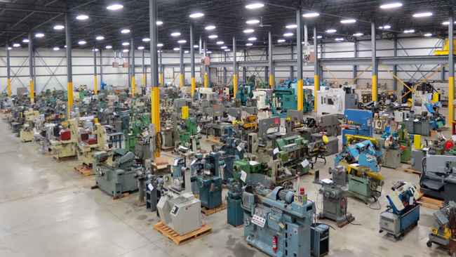

[master.dbo.sp__run__job]
back to top...
If we want to reduce poverty and misery, if we want to give to every deserving individual what is needed for a safe existence of an intelligent being, we want to provide more machinery, more power. Power is our mainstay, the primary source of our many-sided energies. Nikola Tesla.
I wrote the first iteration of this procedure in the 2012 to 2014 time frame and have been using it since with minor variations. It is a simple mechanism for managing workflow using SQL Server Agent Jobs.
|